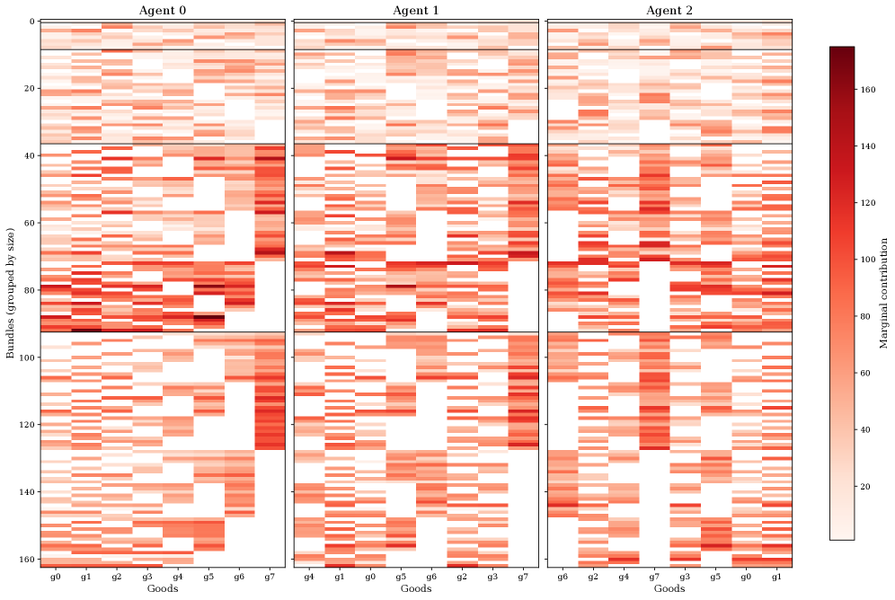

Formally verifies in Lean (on Mathlib) the EFX fair-division theory and the correctness of the SAT/SMT encoding used to derive the counterexample.
Abstract
The existence of EFX allocations is a central open problem in discrete fair division. An allocation is EFX (envy-free up to any good) if no agent envies another agent after the removal of any single good from the other agent's bundle. We resolve this longstanding question by providing the first-ever counterexample to the existence of EFX allocations for agents with monotone valuations, which in turn immediately implies a counterexample for submodular valuations. Specifically, we show that EFX allocations need not exist for instances with $n \ge 3$ agents and $m \ge n+5$ goods. In contrast, we prove that every instance with three agents and seven goods admits an EFX allocation. Both results are obtained via SAT solving. We encode the negation of EFX existence as a SAT instance: satisfiability yields a counterexample, while unsatisfiability establishes universal existence. The correctness of the encoding is formally verified in Lean. Finally, we establish positive guarantees for fair allocations with three agents and an arbitrary number of goods. Although EFX allocations may fail to exist, we prove that every instance with three agents and monotone valuations admits at least one of two natural relaxations of EFX: tEFX, or EF1 and EEFX.
Problem
The existence of EFX (envy-free up to any good) allocations for agents with monotone valuations was a central open problem in discrete fair division.
Approach
The authors encode the negation of EFX existence as a SAT instance: satisfiability yields a counterexample, unsatisfiability establishes universal existence. They reduce the search space using theoretical foundations (non-degeneracy, leveling, item-ordering). The correctness of the SAT encoding is formally verified in Lean. Results are confirmed by both SPASS-SAT and CaDiCaL with DRAT-trim proof checking.
Results
A counterexample to EFX existence is found for n >= 3 agents and m >= n+5 goods with monotone (hence also submodular) valuations. Conversely, every instance with 3 agents and 7 goods is shown to admit an EFX allocation. The SAT run for 8 items (97,920 variables) found the counterexample in about 3 hours (CaDiCaL) / 20 hours (SPASS-SAT).

Figure 2: Visualization of the marginal contributions in the counterexample to EFX existence for 3 agents and 8 goods. The colors indicate the \Delta_{i}(S,g)=v_{i}(S\cup g)-v_{i}(S) values for all S and g . For each of the agents, the goods are ordered by increasing value. The bundles S of goods are visualized along the vertical axis. Bundles are grouped by size, the groups are separated by black